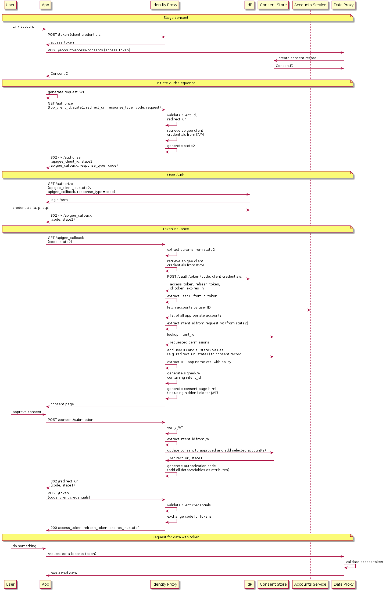

Find the source on GitHub.
TLDR? Here is a great summary from David Andrzejek (Head of Financial Services, Apigee).
In future, banks will no longer own the customer experience. Third Party App Developers will.
An ‘application programming interface' is an interface that makes it easy for one application to ‘consume' capabilities or data from another application.
API Management is the set of processes that enables a business to have control over and visibility into the APIs that connect applications and data across the enterprise and across clouds.
Key aspects include:
A developer has an idea for an app. They open the banks developer portal.
If they cannot use your APIs, they will look elsewhere.
Competitions and Markets Authority investigated the following three questions:
The following remedies were proposed:
Looks to better support two new types of payment service that have entered the market:
We are now seeing a growth in Open Banking regulation around the world. Examples of Open Banking APIs can be found in USA, Jordan, Mongolia, India and Australia.
The two most popular standards within Europe are:
Whilst initially, banks have been rushing to meet compliance deadlines, many see APIs as a new channel. Three common questions are:
Nationwide Building Society CTO Simon Hamilton on how PSD2, the European Commission's directive on payment services, will provide the U.K. retail bank with new opportunities to build trust with customers, add new services, and collaborate with other innovative firms.
Read about the Metro Bank launch of their Developer Portal with Apigee.
Koen Adolfs, API banking product owner at ABN AMRO explains how API management helps the Amsterdam-based bank build new customer experiences, simplify innovation and interactions with fintechs, and transform the company's business model.
Read about how Yorkshire Building Society Group are Embracing Open Banking with Apigee.
Rajay Rai, head of digital engineering and applied innovation at Macquarie's Banking and Financial Services Group, explains the importance of API management in co-creating value with the Australian bank's customers and partners.
A great way to kickstart your API Journey is to deploy an example Apigee Banking Reference Implementation. This will give you a real life example against mock backends to learn the different API flows. You can then make informed decisions about your architecture and implementation.
export APIGEE_USER=someone@example.com
export APIGEE_PASS="password"
export APIGEE_ORG=orgname
export APIGEE_ENV=test
Map Name | apigee-reference-bank |
Key | mgmtCredentials |
Value | Basic (base64 encoded username and password) |
This KVM can be created with the following:
curl https://api.enterprise.apigee.com/v1/o/$APIGEE_ORG/e/$APIGEE_ENV/keyvaluemaps -u $APIGEE_USER:$APIGEE_PASS -H "Content-Type: application/json" -d "{ \"name\": \"apigee-reference-bank\", \"encrypted\": \"true\", \"entry\": [{ \"name\": \"mgmtCredentials\", \"value\": \"Basic $(echo -n $APIGEE_USER:$APIGEE_PASS | base64)\" }] }"
git clone https://github.com/apigee/openbank.git
cd openbank
npm install
npm run deployAll
Create an API Product with
| | |
|—|—|
| Name | openbanking |
| Proxies | identity-v1 sandboxes-v1 mock-tpp-v1 |
| Envs | test |
| Paths | / /** |
Create a Developer that corresponds to ./test/fixtures/dynamicRegistration.json
developer@example.com |
Create a Developer App with the following
Name | Open Banking Test App |
Callback URL | https://httpbin.org/get |
Developer | developer@example.com |
Product | openbanking |
Take the Client ID and Client Secret from the newly created app and add it to ./apiproxies/sandboxes-v1/apiproxy/resources/hosted/support/clients and ./test/step_definitions/init.js
This will replace the foo client.
npm test
Obtaining some Public Data:
curl https://$APIGEE_ORG-$APIGEE_ENV.apigee.net/atm-sandbox/open-banking/v2.3/atms -v
Dynamically Registering an API:
curl -H "Content-Type: application/json" -H "SSL-CLIENT-CERT: $(cat ./test/fixtures/eidasCert.txt)" -d "@./test/fixtures/dynamicRegistration.json" https://$APIGEE_ORG-$APIGEE_ENV.apigee.net/identity/v1/connect/register -v
Make a note of the client id and secret!
export CLIENT_ID=xxx
export CLIENT_SECRET=xxx
Obtain a client credentials Access Token:
curl -u $CLIENT_ID:$CLIENT_SECRET -d "grant_type=client_credentials" https://$APIGEE_ORG-$APIGEE_ENV.apigee.net/identity/v1/token -v
Make a note of the token:
export CLIENT_TOKEN=xxx
Create Account Access Consent:
curl -H "x-fapi-financial-id: 123" -H "Authorization: Bearer $CLIENT_TOKEN" -d "@./test/fixtures/accountAccessConsent.json" -H "Content-Type: application/json" https://$APIGEE_ORG-$APIGEE_ENV.apigee.net/ais-sandbox/open-banking/v3.1/aisp/account-access-consents -v
User Authorization:
Open your browser to https://$APIGEE_ORG-$APIGEE_ENV.apigee.net/mock-idp/auth?client_id=$CLIENT_ID&redirect_uri=https://httpbin.org/get&response_type=code&scope=openid&state=123
Follow the steps and make a note of the auth code:
export AUTH_CODE=xxx
Obtain a User Access Token:
curl -u $CLIENT_ID:$CLIENT_SECRET -d "grant_type=authorization_code" -d "code=$AUTH_CODE" https://$APIGEE_ORG-$APIGEE_ENV.apigee.net/identity/v1/token -v
Make a note of the token:
export USER_TOKEN=xxx
Access some Account information:
curl -H "Authorization: Bearer $USER_TOKEN" -H "x-fapi-financial-id: 123" https://$APIGEE_ORG-$APIGEE_ENV.apigee.net/ais-sandbox/open-banking/v3.1/aisp/accounts -v
Open Banking specifications are a combination of OAuth 2.0, Open ID Connect, FAPI, eIDAS and specific Open Banking API interfaces. Full documentation for these API Flows can be found in the Open Banking Specifications.
]
A great way to quickly evaluate a Drupal 8 Developer Portal is to use the Apigee Kickstart module.
Firstly, get the Docker Kickstart Project:
git clone https://github.com/apigee/docker-apigee-drupal-kickstart
Next, you can build the docker image and start a container:
(cd docker-apigee-drupal-kickstart && ./start.sh)
Navigate to localhost:8080 and follow the installation wizard. For demo purposes, SQLite should be selected to remove the need to connect to an external database.
Once installed, you can install the specifications in the portal directory. Remember to change the host value to your Apigee Host URL + Base path. Please refer to the setup instructions here.
Now that you have met regulatory requirements, it is time to innovate beyond the standards required by regulations.
As a starting point, you can understand the Digital Maturity of your organization using the Apigee Compass tool. The recommendations provided by this short questionnaire will help you focus your efforts.
With the sandboxes you have built, you may also choose to run a hackathon. Hackathons with internal staff, students from a local university or external third parties will give you useful feedback on the quality of your solution and how others will invite with your APIs.
Keep us informed on your journey in the future!